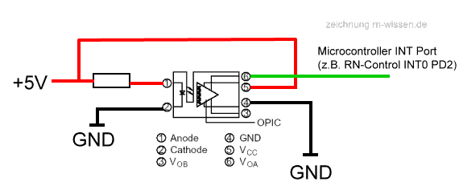

Beispiel Drehzahlmessung mit RN-Control
aus RN-Wissen, der freien Wissensdatenbank
Wie einfach man mit einem Drehgeber die Drehzahl messen kann zeigt diese Schaltung /dieser Quelltext. Für dieses Beispiel wurde ein Drehgeber GP1A030 mit Codescheibe verwendet. Es könnte aber genauso ein GP1A038 oder ein ähnlicher Sensor sein. In diesem Demo wird nicht die Drehrichtung ausgewertet, obwohl es mit diesen Sensor ebenfalls möglich wäre.

{kind=link}
Beispielschaltung
wenn man lediglich die Drehzahl ohne Drehrichtung auswerten möchte. Als
Widerstand hat sich 330 Ohm als gut erwiesen.
'################################################### 'rncontrol_drehzahl.BAS 'für 'RoboterNetz Board RN-CONTROL ab Version 1.1 'Das neue preiswerte Controllerboard zum experimentieren ' Achtung: ' Diese Demo ist mit Bascom Compiler 1.11.7.8 getestet ' 'Aufgabe: ' Dieses Testprogramm demonstriert wie man mit Drehgeber ' die Umdrehungszahl von Motoren anzeigen kann ' Als Drehgeber wird ein Sharp GP1A030 mit Codescheibe ' verwendet (siehe http://www.robotikhardware.de Rubrik Sensoren) ' In diesem Demo wird nicht die Drehrichtung ausgewertet, daher ' wird nur ein Interrupt Port (INT0) an den Sensorausgang (VOA) ' angeschlossen. Zudem noch +5V, GND und +5V wüber 330 Ohm ' Widerstand an Anode des Sensors. Also einfachste Beschaltung. ' Wenn man nun Programm startet wird jede Sekunde die Drehzahl ' ermittelt und alle 3 Sekunden über RS232 auf einem ' Terminalprogramm (oder KN-KeyLCD) ausgegeben. ' Das Programm eigent sich somit zum Messen von Drehzahlen als ' als auch zur Überprüfung der Drehgeberfunktion. Es läßt sich ' sehr einfach zu Wegstrecken Auswertung ausbauen. Statt ' an einem Interrupt könnte man Sensor auch an einen Timereingang ' anschließen, jedoch wird dies hier im Programm nicht berücksichtigt. 'Autor: Frank 'Weitere Beispiele und Beschreibung der Hardware 'unter http://www.Roboternetz.de oder robotikhardware.de '####################################################### $regfile = "m32def.dat" ' bei Mega 16 $regfile = "m16def.dat" $framesize = 32 $swstack = 32 $hwstack = 32 $crystal = 16000000 'Quarzfrequenz $baud = 9600 Config Int0 = Falling Config Timer1 = Timer, Prescale = 256 Const Timervorgabe = 3036 Const Markierungenproscheibe = 120 Dim Zaehlerirq0 As Long Dim Impulseprosekunde As Long Dim Impulseprominute As Long Dim Umdrehungenprominute As Integer Print Print "* RN-CONTROL 1.4 *" Print "Drehzahl Messung"; "" Zaehlerirq0 = 0 On Int0 Irq0 Enable Int0 On Timer1 Timer_irq Enable Timer1 Enable Interrupts Do Print Print "Impulse Sek: "; Impulseprosekunde Impulseprominute = Impulseprosekunde * 60 Umdrehungenprominute = Impulseprominute / Markierungenproscheibe Print "Umdreh. Min: "; Umdrehungenprominute Wait 3 Loop End 'Pro Impuls (Markierung auf Scheibe) ein Aufruf Irq0: Incr Zaehlerirq0 Return 'Pro Sekunde ein Aufruf Timer_irq: Timer1 = Timervorgabe Impulseprosekunde = Zaehlerirq0 Zaehlerirq0 = 0 Return